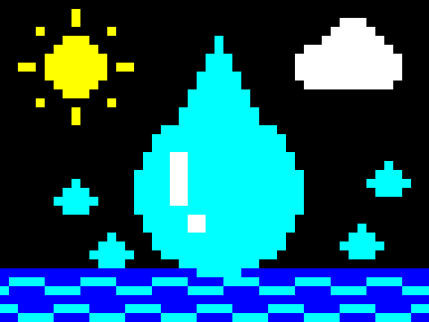

Bienvenida

Te damos la bienvenida a eXeTexto. En estas páginas descubrirás las cuatro fases del ciclo del agua: evaporación, condensación, precipitación y recogida. Después comprobarás lo aprendido con varias actividades.
Como en el teletexto, cada página tiene su número: escribe sus tres cifras para ir a ella. Las teclas de colores te llevan a la página anterior (roja), al índice (verde), a las actividades (amarilla) y a la página siguiente (azul).
Recurso de ejemplo del estilo eXeTexto para eXeLearning, preparado por el Área de Tecnología Educativa de la Consejería de Educación, Formación Profesional, Actividad Física y Deportes del Gobierno de Canarias.